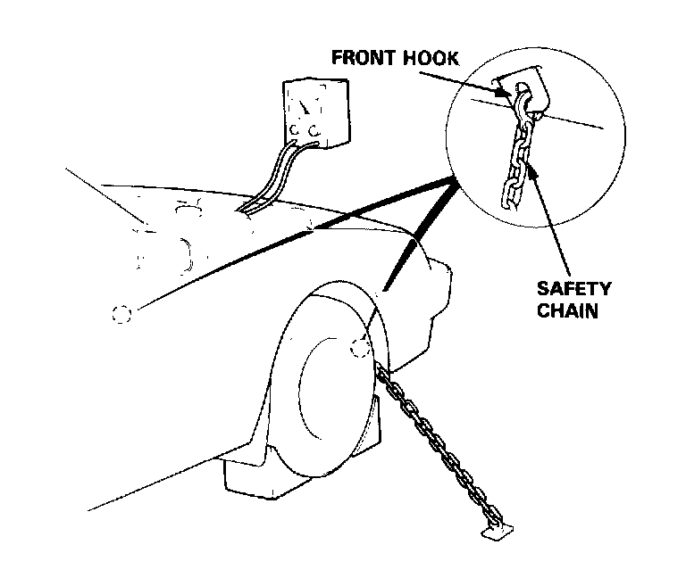
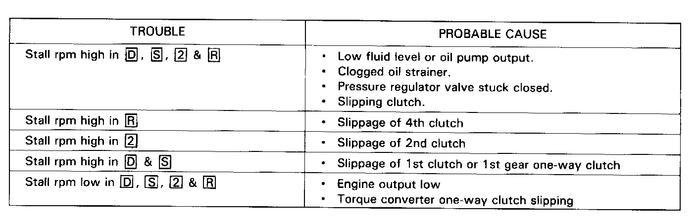

Stall Speed Test
CAUTION:- To prevent transmission damage, do not test stall speed for more than 10 seconds at a time.
- Do not shift the lever while raising the engine speed.
- Be sure to remove the pressure gauge before testing stall speed.
1. Engage parking brake and block the front wheels.

2. Connect safety chains to both front two hooks and attach, with minimum slack, to some strong stationary object.
3. Connect tachometer, and start the engine.

4. After the engine has warmed up to normal operating temperature, shift into [2].
5. Fully depress the brake pedal and accelerator for 6 to 8 seconds, and note engine speed.
6. Allow 2 minutes for cooling, then repeat same test in [D], [S], and [R].
Stall speed in [D], [S] and [R] must be the same, and must also be within limits:
NOTE: Stall speed test must be made only for checking the cause of trouble.
Stall Speed RPM:
Specification: 2.600 rpm
Service Limit: 2,450~2,750 rpm